Kapitel 2 Coronavirus Projekt
Blaaaa Test
> 'data.frame': 70 obs. of 5 variables:
> $ date : Factor w/ 70 levels "2020-01-01","2020-01-02",..: 1 2 3 4 5 6 7 8 9 10 ...
> $ hits : int 0 0 0 0 0 0 0 0 0 0 ...
> $ geo : Factor w/ 1 level "world": 1 1 1 1 1 1 1 1 1 1 ...
> $ keyword: Factor w/ 1 level "coronavirus": 1 1 1 1 1 1 1 1 1 1 ...
> $ gprop : Factor w/ 1 level "web": 1 1 1 1 1 1 1 1 1 1 ...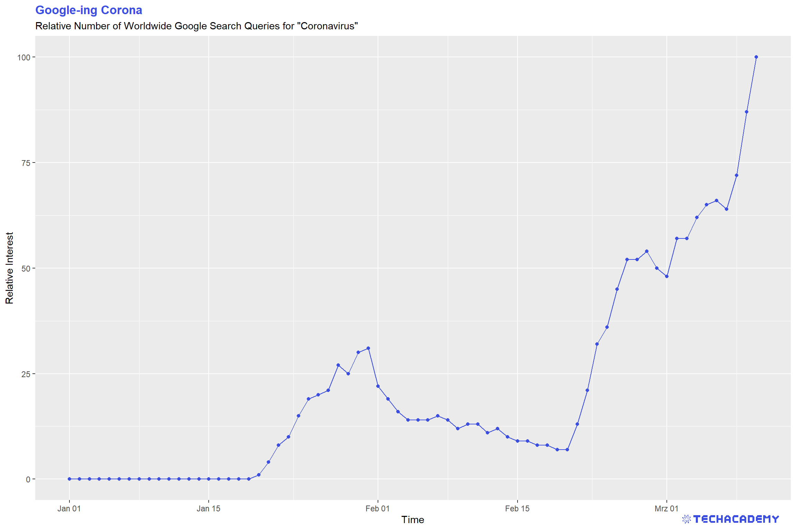
> 'data.frame': 340 obs. of 8 variables:
> $ symbol : Factor w/ 7 levels "^GDAXI","^GSPC",..: 2 2 2 2 2 2 2 2 2 2 ...
> $ date : Factor w/ 50 levels "2020-01-02","2020-01-03",..: 1 2 3 4 5 6 7 8 9 10 ...
> $ open : num 3245 3226 3218 3242 3239 ...
> $ high : num 3258 3246 3247 3245 3267 ...
> $ low : num 3236 3222 3215 3232 3237 ...
> $ close : num 3258 3235 3246 3237 3253 ...
> $ volume : num 3.46e+09 3.46e+09 3.67e+09 3.42e+09 3.72e+09 ...
> $ adjusted: num 3258 3235 3246 3237 3253 ...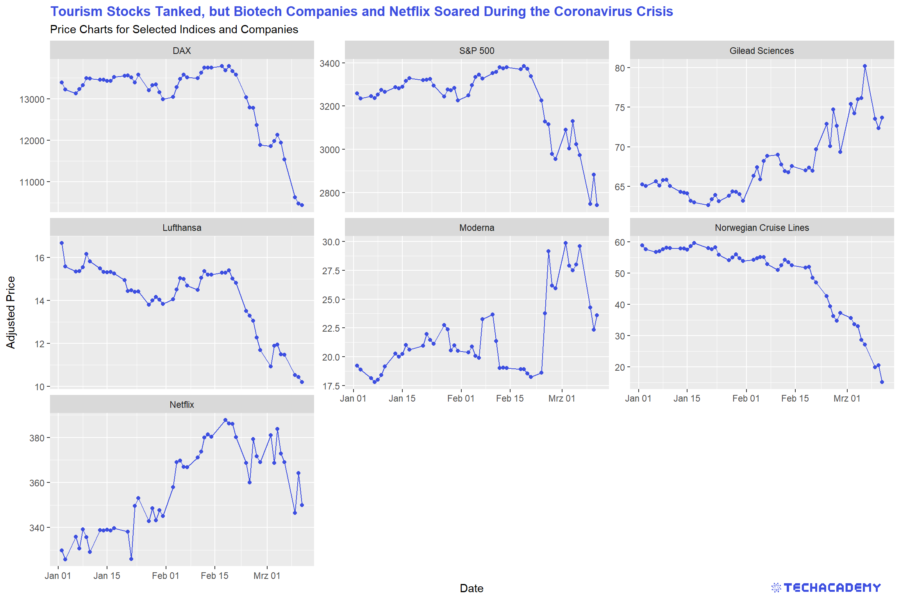
> 'data.frame': 20200 obs. of 7 variables:
> $ id : int 1 2 3 4 5 6 7 8 9 10 ...
> $ province : Factor w/ 297 levels "Adams, IN","Alachua, FL",..: NA NA NA NA NA 20 179 275 216 NA ...
> $ country : Factor w/ 114 levels "Afghanistan",..: 106 57 97 75 66 23 7 7 7 21 ...
> $ latitude : num 15 36 1.28 28.17 2.5 ...
> $ longitude: num 101 138 103.8 84.2 112.5 ...
> $ time : Factor w/ 50 levels "2020-01-22","2020-01-23",..: 1 1 1 1 1 1 1 1 1 1 ...
> $ confirmed: int 2 2 NA NA NA NA NA NA NA NA ...> [1] 0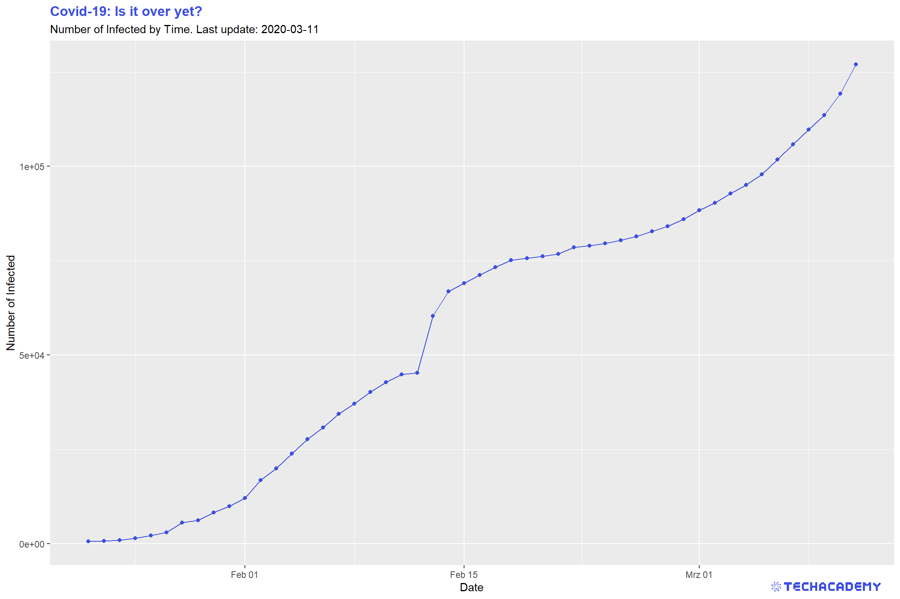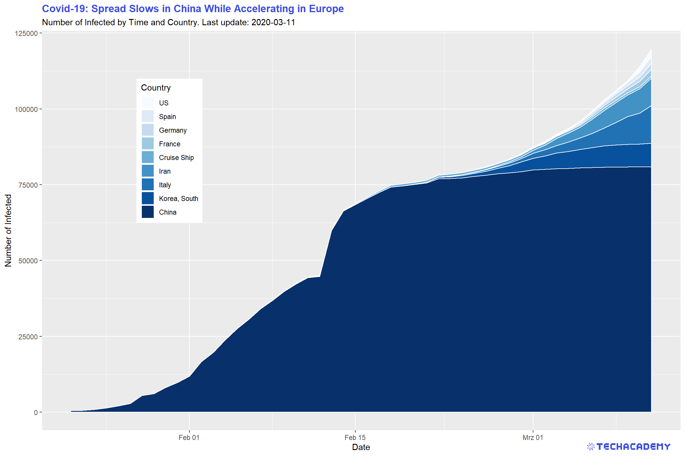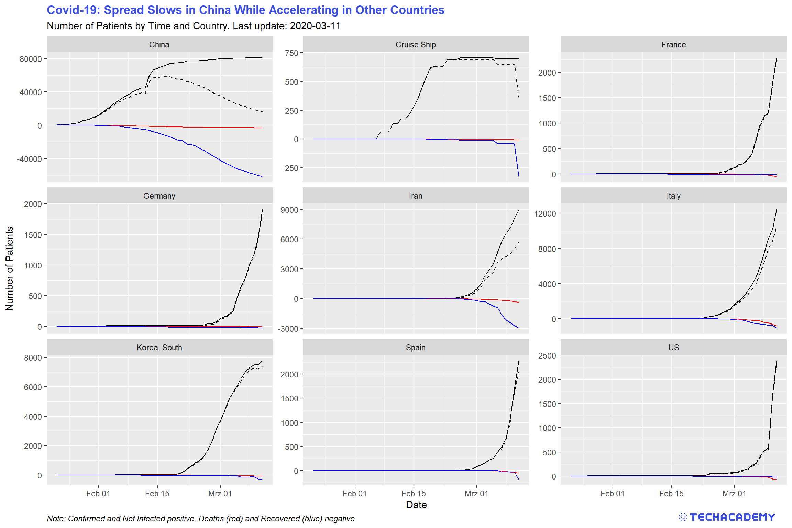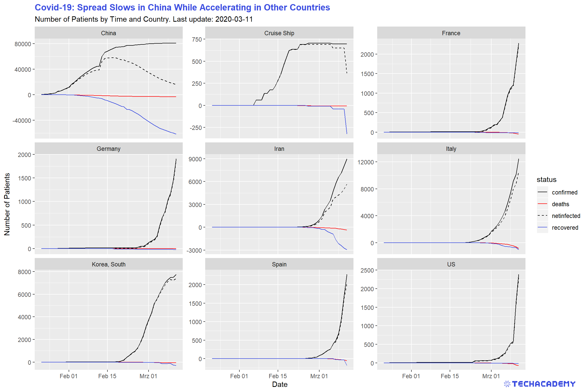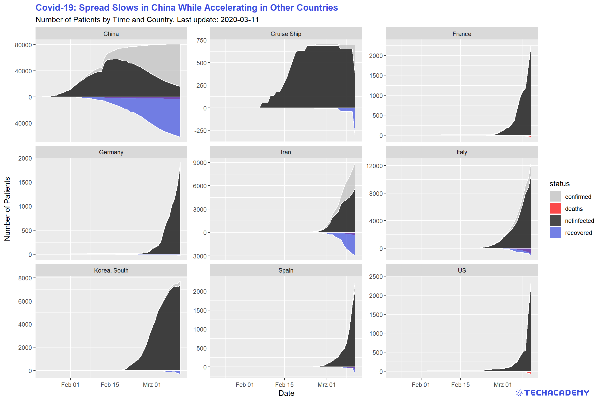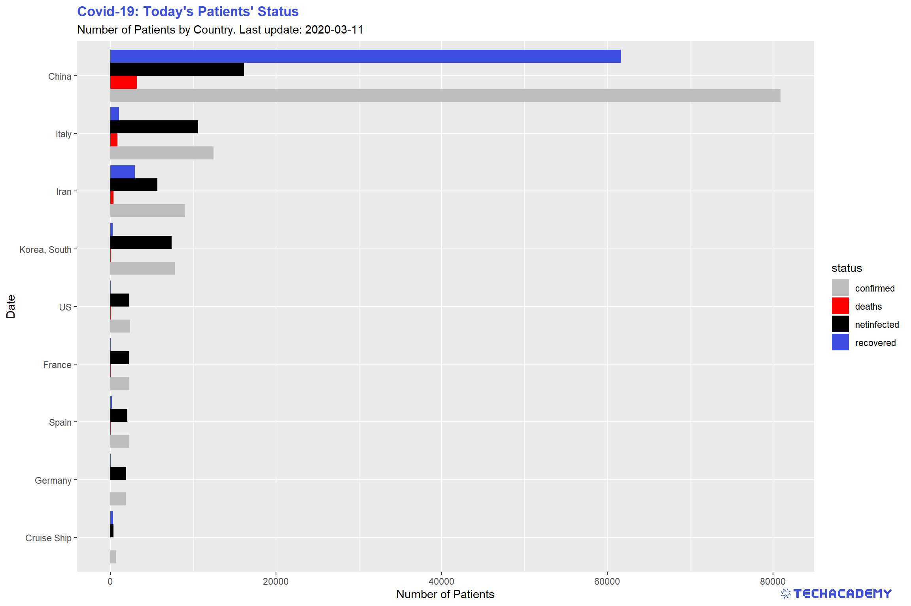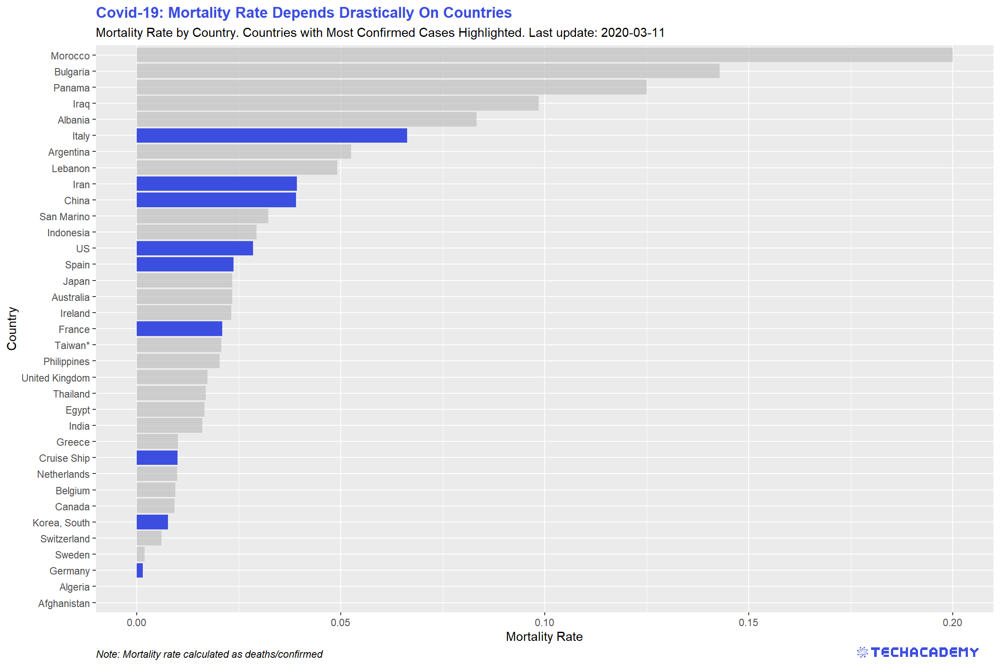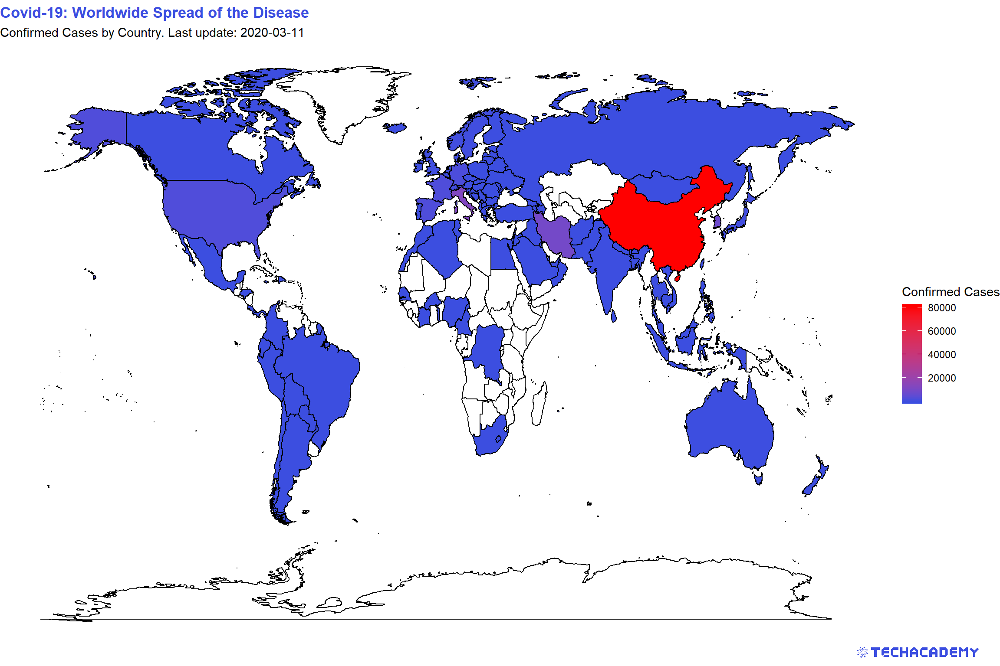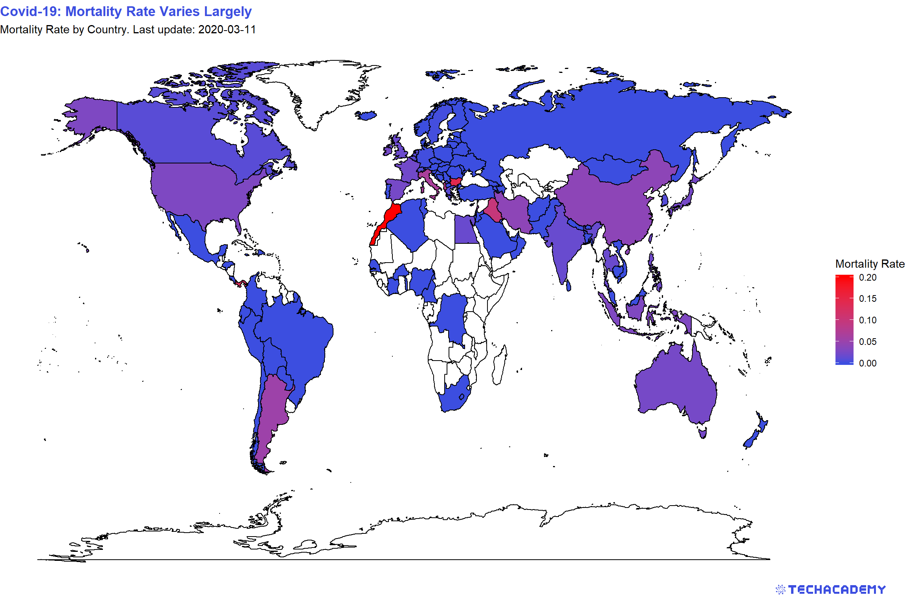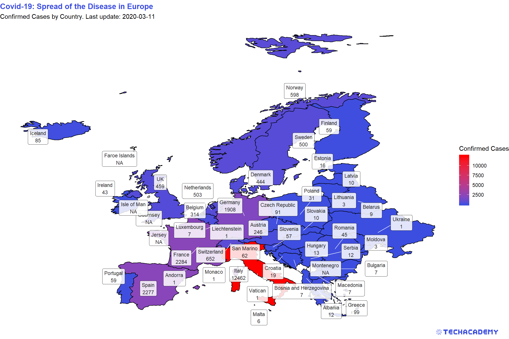